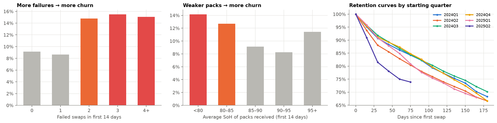
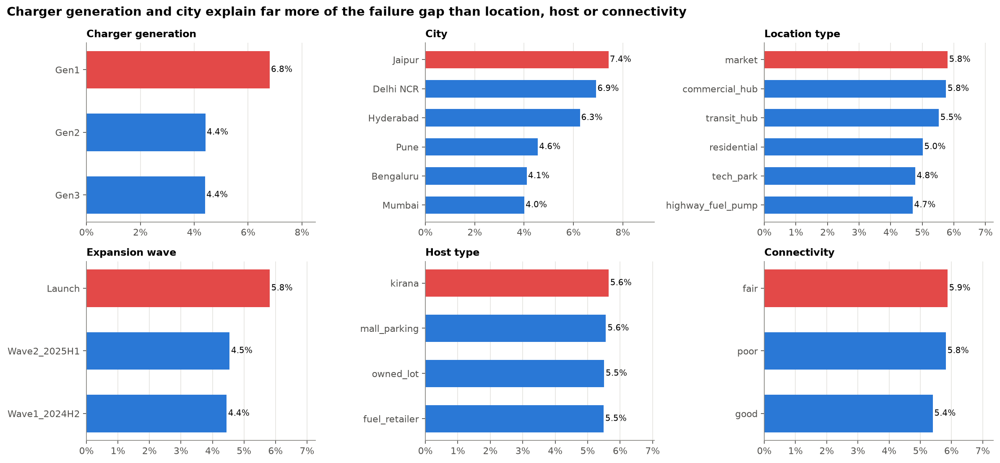
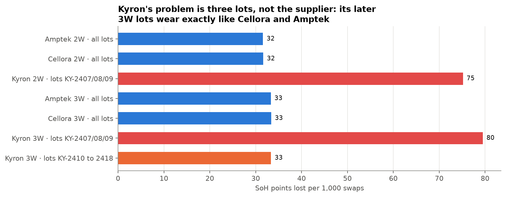
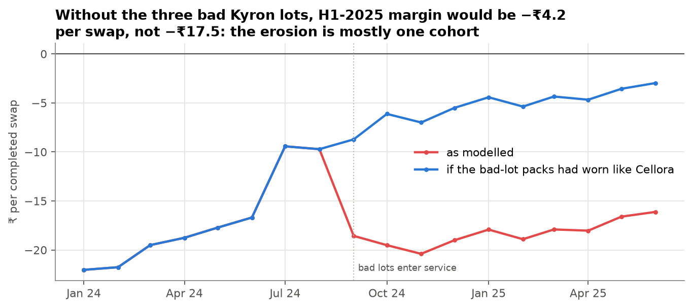

Gradient Learnings Data Analytics Hackathon · Analysis Report
What is really driving VoltRelay's service failures, rider churn and eroding margins?
Team WindRocker · 18 months of network data (Jan 2024 – Jun 2025) · 3.81M swap attempts · 152 stations · 6 cities
VoltRelay does not have a demand problem or a "too few stations" problem. It has three fixable operational problems: old Gen1 chargers that overheat in the Jaipur, Delhi NCR and Hyderabad summers; three bad battery lots from one supplier (Kyron KY-2407/08/09) that degraded 2.4× faster, which wiped out the price-rise margin gain; and new riders who hit repeated failed swaps in their first fortnight and leave. Fix the equipment, replace the bad packs, protect new riders, and do not lock in the ZipDrop discount.
Completed swaps / month
104K → 303K
2.9× in 18 months
Revenue / month
₹6.2M → ₹19.7M
₹229M over the period
Summer failure rate
8.4%
vs 3.9% rest of year · peak 11.9%
CM / swap, H1 2025
−₹17.5
−₹4.2 without the three bad lots
① Heat × Gen1 chargers
Above 45°C a Gen1 cabinet needs 156 min (not 88) to charge a pack and runs out of stock in 37% of hours. The 36 hot-city Gen1 stations handle 32% of summer attempts but cause 57.5% of summer failures.
② Three bad battery lots
Kyron lots KY-2407/08/09 deliver 49 km vs 61 km and cost ₹82 vs ₹35 in wear per swap; they explain ~76% of the H1-2025 margin loss. Kyron's later lots wear normally. Battery/range is now the #1 complaint.
③ First-fortnight failures
New riders with 2+ failed swaps in their first 14 days churn at 15.0% vs 9.0% (adjusted OR 1.58, 2.05 with early activity controlled). Price plan, channel and partner do not matter.
How to read this report. Section 1 frames the problem, Section 2 shows how we cleaned and analysed the data, Section 3 answers the six core questions with evidence, Section 4 separates primary from secondary drivers and answers the budget question, and Section 5 lists prioritised, sized actions. Appendix B shows how we tried to break our own findings (confounding, exposure bias, double counting) and what changed as a result. Every chart is reproducible from the two notebooks, and the interactive dashboard lets leadership filter by city, vehicle, charger generation and date.
Deliverables: Colab notebook (runs top to bottom) · interactive dashboard · this report · 3-minute videoTeam WindRocker
1Problem Understanding
Business context. VoltRelay runs unmanned battery-swap cabinets for gig and logistics riders (food delivery, quick commerce, e-commerce, cargo, bike taxi) across six Indian cities. Its riders are paid per trip, so every minute at a station is lost income. A failed swap costs VoltRelay a sale and gives the rider a reason to switch networks.
The paradox. Over 18 months completed swaps and revenue grew strongly, but service failures rose faster, new-rider retention fell and per-swap profitability eroded. In the same window VoltRelay expanded in two waves, raised its base price, piloted peak/off-peak pricing in two cities, onboarded a new battery supplier and renegotiated its largest fleet contract. Leadership must choose between four budget proposals (more stations, more batteries, network-wide peak pricing, a long-term ZipDrop exclusive) and needs to know what is actually driving the outcomes.
How we framed it: one causal chain, not six separate questions
Service experiencefailed / abandoned swaps, range delivered
Retentiondoes a new rider come back?
Unit economicsrevenue, energy, battery wear, site cost
For every factor we asked three things: is there a mechanism (not just a correlation), how big is the effect, and how many riders or swaps does it touch. Factors that are large, widespread and consistent across cuts are called primary drivers; real but smaller or narrower effects are secondary/contributing. The data is observational, so we argue likely causes from mechanism, timing and dose-response, and state where that stops.
Early failures & summer start primary; weak packs contributing
2Analytical Approach
Data & tooling
Eight related tables (swap events 3.88M rows; hourly station telemetry 1.49M; riders 20K; batteries 6.5K; tickets 44K; stations 152; city-day context; 12 fleet partners). All joins and aggregations run in DuckDB SQL inside a Colab notebook (Python, pandas, statsmodels, matplotlib), so the full 3.9M-row history is analysed with no sampling. Every number in this report, the dashboard and our LinkedIn post comes from one exported metrics file.
Metric definitions
Service-failure rate = (no charged battery + abandoned queue + system error) ÷ all attempts. Rider cancellations are reported separately.
Contribution margin per completed swap = revenue − energy (kWh × station tariff) − battery wear − station fixed cost (rent + maintenance ÷ that station's swaps that month).
Battery wear = purchase cost × SoH lost per swap ÷ (initial SoH − 70% end-of-life), measured per pack inside the data window and applied by supplier and pack type.
New-rider early churn = signed up on or after 1 Jan 2024 and last swap within 30 days of the first swap (first swap before 1 May 2025, so 60+ days are observable).
Methods
Trend, segment and concentration (Pareto) analysis; telemetry joined to swaps at station-hour level.
Difference-in-differences for the peak-pricing pilot: pilot vs control cities, before vs after, with station and month fixed effects and station-clustered errors.
Logistic regression of new-rider churn on first-14-day experience, with plan, city and channel controls; χ² tests and dose-response checks.
Text re-labelling of ticket comments (English + Hinglish keyword rules, typo-normalised).
Robustness notebook: load-matched, lot-level, rider-panel and activity-adjusted re-tests of every claim (Appendix B).
Data cleaning: every brief warning tested
Issue
What we found
Decision
Test stations STN-TST-01/02
62,031 rows, ₹3.93M billed, 24h a day, not the "small, zero-value" set the brief describes
Excluded
Firmware v3.2.0 clock bug (10 Mar–14 Apr 2025)
139,490 events logged 5h30m early; billing confirms it (PEAK swaps in peak hours: 12% → 100%)
+5h30m shift
Offline-sync near-duplicates
Rapid repeats: offline 0.16% vs realtime 0.17%; 0 duplicates under three stricter definitions
86 tickets outside the window; 1,438 'retired' packs still issued afterwards
Excluded · flagged
Figure 1. The v3.2.0 cabinets' demand curve lines up with unaffected stations only after the +5h30m correction.
3Key Insights · Q1 Network performance over time
Figure 2. Monthly completed swaps, revenue, service-failure rate and fully-loaded CM per swap. Dotted lines mark the price rise, Kyron at scale, the pricing pilot and the ZipDrop amendment.
The four metrics tell different stories. Volume grew steadily (104K → 303K completed swaps per month) and revenue kept pace (₹6.2M → ₹19.7M). Failures, however, sit at ~3.9% for nine months of the year and spike every April–June (11.9% in May 2024, 9.5% in May 2025), which is seasonal capacity stress, not gradual decay. Contrary to the brief, failures did not outgrow swaps: H1-2025 failure counts rose 2.1× against 2.4× for completed swaps. The summer problem has not worsened, but it has not been fixed either.
Margin: the July 2024 price rise lifted CM from −₹19.2 to −₹9.6 per swap, then CM fell straight back to −₹18.2 from September 2024, the month the bad Kyron lots arrived at scale. Re-pricing those packs at a normal wear rate puts H1-2025 CM at −₹4.2 instead of −₹17.5: about 76% of the loss is that one cohort.
Figure 3. CM bridge, H1-2024 → H1-2025: +₹4.9 from price and +₹6.5 from scale, almost all absorbed by ₹13.0 of extra battery wear. The +₹3.4 energy step is not a gain: kWh per swap fell 2.02 → 1.69 because aged packs hold less charge.
So what Growth hides two separate problems: a seasonal capacity problem (failures) and an asset problem (margin, mostly one bad battery cohort). Neither is solved by more volume or more stations of the same kind. Sensitivity: the CM level depends on the wear assumption (with 30% salvage, CM went +₹2.3 → −₹2.5), but the direction and the driver hold under every assumption; before battery wear, margin per swap rose from ₹20 to ₹34.
3Key Insights · Q2 Service failures & Q3 Stations
Figure 4. Summer failure rate by city and hour (timestamps corrected). Jaipur, Delhi NCR and Hyderabad fail 9–12% all day and 13–19% in the 19–22h rush; Bengaluru and Mumbai stay near 4%.Figure 5. Mechanism from hourly telemetry: Gen1 charge time and stock-outs explode above a 45°C cabinet temperature; Gen3 is unaffected.
Supply, not software: in summer "no charged battery" rises 2.4% → 5.5% and queue abandonment 1.3% → 2.7%, while system errors and cancellations are unchanged. When a cabinet's stock hits zero, failure doubles (11.2% vs 5.4%).
Concentrated: the 36 hot-city Gen1 stations handle 32% of summer attempts but cause 57.5% of summer failures; every one of the worst 20% of stations is Gen1.
3W: 3W riders fail 12.2% in summer vs 7.9% for 2W, and the gap exists all year (8.6% vs 3.3%). It is not about 3W slots: failure is the same at stations with and without them.
Equipment, not just climate or load:within Delhi NCR, Gen1 fails 16.5% of summer attempts vs 5.3% at Gen3 (Jaipur 16.8% vs 5.3%). At every load level Gen1 fails 14–16% vs ~5% for Gen3, and Gen3 sites are actually busier. In mild Bengaluru and Mumbai all generations perform the same.
Location type, host type and connectivity move failure by ≤1 pt. Complaints follow the same map (Jaipur 14.5 vs Mumbai 8.9 tickets per 1,000 swaps).
So what Service quality is not spread evenly. It is a Gen1-in-hot-cities problem: Gen1 is 48% of attempts but 66% of summer failures, and all 51 Gen1 cabinets are still in service after two expansion waves. Failed riders don't retry, so every failure is a lost sale (≈₹14.3M over 18 months).
3Key Insights · Q4 Batteries & equipment
Figure 6. Left: SoH of 2W packs handed to riders. Kyron lots KY-2407/08/09 fall through the 70% end-of-life line within a year of entering service. Right: delivered range falls steadily with SoH.
Supplier · 2W pack
Packs
SoH lost / 1,000 swaps
Wear ₹ / swap
km per swap
Current SoH
Retired
Cellora
3,035
31.7
₹34.7
60.9
80.0%
0
Amptek
1,098
31.6
₹34.6
60.9
80.0%
0
Kyron (lots KY-2407/08/09)
1,385
75.2
₹82.3
48.6
60.5%
1,385 (all)
A lot defect, not a supplier one: the three bad lots lost SoH 2.4× faster, but Kyron's later 3W lots (KY-2410 to 2418) lose 33 points per 1,000 swaps, the same as Cellora. BMS firmware makes no difference, and the bad packs' SoH is identical in all six cities, so it is not heat.
All 1,438 retired packs are Kyron, retired after 7–9 months (₹44.3M of 2W packs at purchase cost; the premature part is ≈₹28.7M). The retirement is on paper only: they were issued 33,761 more times, and 22% of June-2025 swaps used a pack below 70% SoH.
Riders feel it: 2W range falls from ~67 km at 95% SoH to ~37 km at 60%, and at the same SoH a bad-lot pack delivers 11% fewer km. Battery/range tickets (incl. 9,460 mislabelled 'other' comments like "scooter weak lag raha hai") rose from 308 per quarter to 6,167, and are now 37% of all tickets.
So what One battery cohort is the primary driver of margin erosion (~76% of the H1-2025 loss) and a contributor to complaints and churn. "More batteries" only helps as replacements for the 1,385 bad 2W packs (25% of the 2W fleet), bought on lot acceptance tests rather than supplier name.
3Key Insights · Q5 Pricing & partner economics
Figure 8. Independent riders, pilot cities (Bengaluru, Pune) vs four control cities. Revenue per swap jumps at pilot start; peak-hour share barely moves.
Intervention
Evidence
Effect
Who it hits
Base price ↑ (1 Jul 2024: 2W ₹60→65, 3W ₹100→110)
Before/after
+~₹5 revenue per swap; volume growth unchanged
Everyone (partners at their discount)
Peak/off-peak pilot (BLR, PUN, Oct 2024)
Difference-in-differences, station + month FE, clustered SE
+₹8.0 per swap (95% CI 7.7–8.3); peak share −2.6 pts; failure rate +0.05 pts (no change); swaps per rider −4.6%, so revenue per rider +7.9%
Gig riders cannot move their shifts, so price is a revenue lever, not a congestion lever. The pilot left summer failures untouched, and some swaps simply left the network.
The largest partner is the least valuable: ZipDrop earns −₹31.1/swap vs −₹13.8 for the best partner (DabbaXpress) and −₹9.7 for independent riders. It loses −₹19.9 per swap even before site costs, and the deeper discount bought no volume (share 15.1% → 15.5%). The extra discount costs ≈₹5.7M a year.
3W cargo partners are also margin-negative despite ₹110 pricing: 3W packs carry ₹77–81 of wear per swap.
So what Pricing and contracts affect segments very differently. Peak pricing earns more from independents; the ZipDrop deal gives away more than any other partner term.
3Key Insights · Q6 Root cause of new-rider churn
Figure 10. Left: 30-day churn with and without each first-2-week experience (13,797 new riders; base churn 9.9%). Right: adjusted odds ratios from a logistic regression with plan, city and channel controls.

Figure 11. Dose-response and cohort curves: churn jumps once a rider suffers 2+ early failures; weaker packs raise churn; riders who start in Q2 (summer) leave fastest.
Tier
Factor
Evidence
PRIMARY
2+ failed swaps in the first 14 days
Churn 15.0% vs 9.0%; adjusted OR 1.58 (95% CI 1.36–1.82, p<0.001), 2.05 once early riding activity is controlled (heavy riders see more failures but churn less); riders whose early failure rate topped 20% churned at 23.3%; 16% of new riders exposed
PRIMARY
Starting in summer (Apr–Jun)
Churn 13.6% vs 8.8%; OR 1.43 even controlling for early failures; the April-2025 intake churned worst of all (16.8% vs 11.9% a year earlier)
CONTRIBUTING
Weak packs (avg SoH < 85%)
Churn 12.9% vs 9.5%; OR 1.23 (p=0.02), 1.46 with activity controlled; only 2025 riders ever received such packs
SECONDARY
Kyron-heavy packs, nearby competitor, 3W, raising a ticket
1.1–1.2× raw lift; not significant once failures and pack health are controlled
No significant effect (promotions: OR 0.90, p=0.63). Gen1 acts through failures (mediator), not on its own
So what Retention is decided by the first two weeks of operations, not by price or marketing. The same Gen1-in-summer and weak-battery problems behind Q2–Q4 are what push new riders out. (Churn is noisy, pseudo-R² 0.015: these are the controllable levers, not the full story. The published odds ratios are lower bounds.)
Mechanism visible in telemetry; holds within cities and at every load level; sharp threshold (4.1% → 18.7% failures as the day's cabinet peak passes 43–46°C); repeats in both summers
2
Kyron lots KY-2407/08/09 degraded 2.4× faster → lower range, 2.4× wear cost, ~76% of the H1-2025 margin loss
Lot-level split (later Kyron lots are normal); same SoH loss in every city; BMS ruled out; timing matches the Sep-2024 margin drop
3
Early failures and summer starts drive new-rider churn
PRIMARY churn
Logistic regression with controls, stronger when early activity is controlled; dose-response by failure rate
4
ZipDrop's 28% discount makes the largest partner the least profitable
SECONDARY network margin · key for partner strategy
Before/after on the same partner; negative even before site costs; the discount bought no volume
5
Peak pricing adds revenue but barely shifts demand and trims swaps per rider 4.6%
SECONDARY revenue lever only
Difference-in-differences with fixed effects; rider-month panel
6
Expansion waves added capacity evenly (+60–80% per city), not where failures were
CONTRIB. why summer 2025 ≈ 2024
Gen1 hotspot failure rates unchanged year on year (Delhi Gen1 16.4% → 16.6%)
7
Data issues: billed test stations, firmware clock bug, broken payment_mode, mislabelled tickets, 'retired' packs still in service
Governance
Direct checks; the ticket mislabelling hid the battery problem for months
The budget question, answered: the evidence does not support blanket growth. Of the four proposals, batteries (as replacements for the bad lots) and stations (as Gen1→Gen3 swaps in three cities, cooling first) are supported; peak pricing only as a revenue tool after the capacity fix; the ZipDrop exclusive is not.
Proposal
Verdict
Evidence
More stations
Partly: only Gen1 → Gen3 replacement
New waves went everywhere; all 51 Gen1 cabinets remain and cause 66% of summer failures. Gen1 fails ~3× Gen3 at every load level, so more Gen1-style sites would not fix the heat problem.
More batteries
Yes, as replacements
Replace the 1,385 bad-lot 2W packs (25% of the 2W fleet, ≈₹44M): 49 km vs 61 km and ₹82 vs ₹35 wear per swap. Buy on lot acceptance tests, not supplier name; do not add packs for growth.
Network-wide peak pricing
Not as proposed
+₹8.0/swap, but riders swap 4.6% less, only −2.6 pts demand shift and no failure reduction; exempt partners dodge it.
ZipDrop long-term exclusive
No
15% of volume at −₹31/swap, the lowest margin on the network, and −₹19.9 even before site costs. An exclusive locks in the 28% discount.
Limitations. Observational (simulated) data: we show consistent associations backed by mechanism, timing and dose-response, not proof of causation. CM uses modelled battery wear and site costs, so its level is assumption-sensitive while its trend is not. Churn is defined on activity (no explicit cancellation). The pricing effect is estimated on independent riders only. Appendix B lists every claim we re-tested and what changed.
5Actionable Recommendations
Action
Owner
Expected impact (sized from data)
KPI to track
1
Replace the 36 Gen1 cabinets in Jaipur, Delhi NCR and Hyderabad with Gen3 before April. Start with cooling retrofits on the same cabinets and pre-position charged packs before 12:00 on heat-alert days.
Network Ops
≈22,600 failures avoided / yr (39% of summer failures), ≈₹1.4M revenue; cooling by 5°C alone ≈14,400 (64% of that)
Summer failure rate at these sites (16% → ~5%); days with cabinet peak above 45°C
2
Pull and replace the bad-lot packs. Remove the 1,438 'retired' Kyron packs still in use, replace the 1,385 2W packs before summer, claim warranty on KY-2407/08/09, and buy on lot acceptance tests, not supplier name.
Procurement / Asset
≈₹44M of replacement packs; ≈₹28.7M premature asset loss not repeated; +12 km per swap for affected riders
Wear ₹/swap by lot; share of swaps below 70% SoH; battery tickets
3
Protect every new rider's first fortnight: route new riders to healthy packs (screen by lot, since SoH readings flatter the bad lots), auto-credit after any failed swap, and hold back summer acquisition in hot cities until #1 is done.
CX / Growth
≈135–156 more riders kept per 13.8K new riders (≈1 pt churn), compounding with #1
30-day churn of new riders; % with 2+ early failures
4
Renegotiate ZipDrop; do not sign an exclusive on current terms. Move to a volume-tiered discount capped near 15%, make the peak surcharge billable, and tie discounts to off-peak volume.
Partnerships / Finance
Up to ≈₹5.7M / yr margin recovered
CM per ZipDrop swap vs network average
5
Keep peak pricing as a revenue tool. Extend it to the four control cities for independent riders after #1 lowers summer failures; deepen off-peak discounts if shifting demand is the aim.
Pricing
≈₹3.7M / yr extra revenue, net of 4.6% fewer swaps per rider
Revenue per rider; swaps per rider; churn of independents in rollout cities
6
Fix the data plumbing: exclude test cabinets, patch firmware v3.2.0, repair payment_mode, reconcile the asset register with cabinet logs, add a battery/range ticket category and a lot-level SoH alert.
Weeks 0–4: pull the 'retired' packs and order replacements on lot tests; warranty claim; new-rider pack routing and auto-credit; ticket taxonomy.
Weeks 4–8: Gen3 procurement and site survey for the 36 hot-city Gen1 cabinets; cooling retrofits as a stop-gap; ZipDrop renegotiation.
Weeks 8–12: first Gen3 swaps in Jaipur and Delhi NCR before the heat; summer inventory playbook; decide the pricing rollout on post-fix data.
Governance: one monthly dashboard (this one) owned by Ops, with summer failure rate at Gen1 sites, wear ₹/swap by supplier and new-rider 30-day churn as north-star KPIs.
AAppendix: supporting evidence
Figure A1. Stations ranked by failures; summer failure rate coloured by generation.

Figure A2. Failure rate by station attribute: generation and city dominate; location, host and connectivity matter little.
Unit economics, network average per completed swap (Jan 2024 – Jun 2025)
Revenue
Energy
Battery wear
Station fixed
Contribution margin
₹63.9
−₹19.5
−₹48.6
−₹13.4
−₹17.6
CM sensitivity to the battery-wear assumption
Period
Base (70% end-of-life)
With 30% salvage value
Before battery wear
H1 2024
−₹19.2
−₹7.4
₹20.3
Jul–Aug 2024 (after price rise)
−₹9.6
+₹2.3
₹29.8
Sep 2024 – Jun 2025 (bad lots at scale)
−₹18.2
−₹2.5
₹34.1
If the bad-lot packs had worn like a normal pack, H1-2025 CM would be −₹4.2 instead of −₹17.5 (base case).
Reproducibility
Notebook VoltRelay_Analysis_WindRocker.ipynb runs top to bottom in Google Colab (mounts Drive, reads the CSV or CSV.GZ files) or locally, and regenerates every figure, the dashboard data and outputs/metrics.json. The companion VoltRelay_Robustness_Checks_WindRocker.ipynb re-tests every headline claim and writes outputs/audit_metrics.json. Heavy aggregation in DuckDB; statistics in statsmodels/scipy. Synthetic dataset, generation seed 59500.
Team WindRocker · Gradient Learnings Data Analytics Hackathon · All company names are fictional.
BAppendix: how we tried to break our own findings
For every headline number we asked four questions: could something else produce the same pattern (confounding)? Is a "concentration" just who was observed longest (exposure bias)? Are two numbers really the same money (double counting)? Does a sizing assume nobody reacts (behavioural response)? The full tests are in the robustness notebook.

Figure B1. SoH lost per 1,000 swaps by supplier and lot. Kyron's later 3W lots wear like Cellora and Amptek: the defect is in three lots.

Figure B2. Monthly CM per swap as modelled vs re-priced at a normal pack's wear rate: most of the post-Sep-2024 erosion is the bad lots.
Claim
What we tested and found
Verdict
Gen1 × heat drives summer failures
Gen1 fails 14–16% in every load quartile vs ~5% for Gen3 (Gen3 is busier); outages, offline chargers and quarantined packs are negligible
Holds
"Worst 20% of stations = 43% of failures"
They carry 31% of attempts and were open all 18 months (1.4× concentration). Sharper: 36 hot-city Gen1 stations = 57.5% of summer failures
Reframed
"3W fails more because fewer stations have 3W slots"
3W failure is identical with or without listed 3W slots, and the gap exists all year; 57% of 3W swaps happen at "zero-slot" stations
Dropped
"Stop buying Kyron"
Only lots KY-2407/08/09 are bad; later Kyron lots wear normally (33 vs 33 SoH points per 1,000 swaps)
Now a lot problem
₹48M written off + ₹34M/yr excess wear
Same money counted twice. 2W packs: ₹44.3M gross, ≈₹28.7M premature; no recurring saving once the packs are pulled
Corrected
+₹3.4 energy saving in the margin bridge
kWh per swap fell 2.02 → 1.69 because packs aged (SoH 97% → 81%): riders got less energy
Relabelled
Pricing rollout +₹6.1M a year
Pilot riders swapped 4.6% less often (rider-month panel, rider + month fixed effects); revenue per rider +7.9%, not +11.8%
≈₹3.7M
Churn OR 1.58 for 2+ early failures
Heavy riders see more failures but churn less; controlling for activity gives 2.05 (weak packs 1.23 → 1.46)
Understated
Firmware fix, near-duplicates
Billing confirms the +5h30m shift (12% → 100% of PEAK swaps in peak hours); 0 duplicates under three stricter definitions
Holds
Competitor activity
Promotions: OR 0.90 (p=0.63); stations near a new competitor did not lose volume
Not a driver
Team WindRocker · Gradient Learnings Data Analytics Hackathon · All company names are fictional.